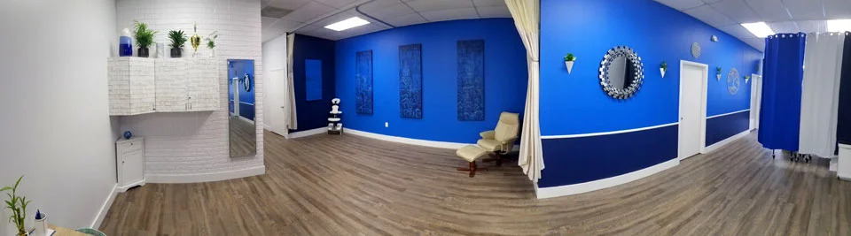
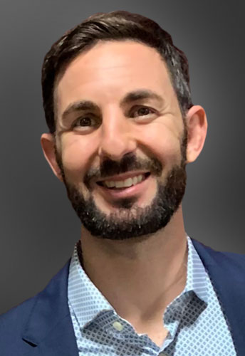

04
Step 4: Breathe
Breathe in slowly through the nose and out slowly, a little longer than the inhale. Keep it comfortable. Never hold your breath.

Acupuncture Tamarac · Tamarac
Qigong is gentle. Its slow movements, relaxed breathing and calm focus can be done standing or seated, and it is one of the most practical forms of exercise for older adults. Dr. Jonathan M. Fields has taught tai chi and qigong in Tamarac and across Broward County for more than twenty two years.

Before starting any new exercise, talk with your physician, especially if you have heart conditions, dizziness, recent surgery or balance problems.

Meet your practitioner
Tamarac patients see Dr. Jonathan M. Fields, a doctoral level acupuncturist whose roots in this community go back to his years in nutrition with his late mentor and partner, Reid Eckert. He completed a doctorate in acupuncture and Oriental medicine, trained in China at Beijing hospitals and the Shaolin Temple, and studied functional medicine and blood chemistry. Tamarac patients appreciate that he slows down, reviews medications carefully and explains each step before treatment begins.
Choose a clear, flat area with a sturdy chair or counter nearby. Wear comfortable clothes and supportive flat shoes.
Feet hip width apart, knees soft, shoulders relaxed. Or sit near the front of a chair with feet flat. Let the top of your head lift gently toward the ceiling.
Breathe in slowly through the nose and out slowly, a little longer than the inhale. Keep it comfortable. Never hold your breath.
Let your arms float up as you inhale and sink as you exhale. Repeat slowly. Stay at about 70 percent of your comfortable range. If anything hurts, make it smaller.
Dr. Fields teaches a short routine he calls Nine Celestial Cycle qigong, about nine minutes long, moving gently from head to toe. Many people practice it every morning.
Learn more
For readers who want the details: the research, the history and the reasoning behind how we work.
Falls are a leading cause of injury in older adults. Balance tends to decline when we do not practice it. Slow, controlled weight shifting, the heart of tai chi and qigong, trains the muscles and reflexes that keep us steady. The NCCIH reports that tai chi may help improve balance and reduce falls in older people.
Slow, relaxed breathing, especially with a longer exhale, is associated with the body's calming response. Many students say they feel more relaxed after just a few minutes.
Qigong involves no jumping or impact. Movements are smooth and within a comfortable range, making it suitable for many people with arthritis.
Studies of qigong and tai chi have examined balance, blood pressure, sleep, mood and quality of life in older adults (PMC3893407, PMC5861462). A Cochrane review examined these practices for specific conditions (PMC6360922). Results are encouraging in some areas, though many studies are small.
Chair qigong adapts arm movements, breathing and gentle twists to a seated position. It is a good choice for people who use a walker, have significant balance concerns or tire quickly when standing.
Dr. Fields has practiced martial arts for more than thirty five years, holds a 4th degree black belt in Lost Legacy since 2004 and has trained at the Shaolin Temple in China, where he has led retreats. He has taught tai chi and qigong to community groups and at Barry University.
Practice at the same time each day. Start with five minutes. Keep water nearby. Stop if you feel dizzy, short of breath or have pain.
Opening. Stand or sit tall. Take five slow breaths, letting the shoulders soften with each exhale.
Lifting the sky. Interlace your fingers in front of your belly. On the inhale, raise your hands to chest height or higher if comfortable. On the exhale, lower them. Repeat six times.
Turning the waist. With arms relaxed, gently turn the upper body side to side, letting the arms swing loosely. Keep the knees soft. Repeat ten times.
Shifting the weight. Standing with a chair beside you, slowly shift your weight to the right foot, then the left. Keep both feet on the floor. Repeat ten times. If seated, gently lean side to side.
Washing the face. Rub the palms together until warm and gently stroke the face from chin to forehead three times.
Closing. Rest the hands on the lower belly and take three slow breaths.
People with arthritis often avoid exercise because it hurts. Qigong offers a different approach: slow, small, pain free movements that keep joints moving and muscles active. Over time, the range of motion may gradually increase. Research on tai chi for knee osteoarthritis has reported improvements in pain and function for some participants.
Some studies have found modest reductions in blood pressure among people practicing qigong or tai chi regularly. Qigong is not a replacement for blood pressure medication. Keep taking your prescriptions and share your readings with your physician.
A short evening practice of slow breathing and gentle movement may help some people wind down before bed. Avoid vigorous exercise late in the evening and keep a consistent bedtime.
After time in the hospital, many people lose strength and confidence. With approval from your medical team, seated qigong can be a gentle way to begin moving again. It complements, and does not replace, physical therapy.
Practicing in a group can make the habit easier to keep and adds social connection, which matters for health at every age. Friends and spouses often practice together at home.
Dr. Fields often recommends qigong along with acupuncture or Chinese herbal medicine. Treatments in the office and daily practice at home support each other.
Keep a chair within reach during standing practice. Avoid practicing right after a large meal. Stop and rest if you feel lightheaded. People with vertigo, recent joint replacement or severe osteoporosis should ask their doctor which movements to avoid.
"I am not coordinated." Qigong movements are simple and repetitive. Coordination improves with practice, and no one is graded.
"I have bad knees." Keep the knees soft and the stance narrow, or practice seated. Movements can always be made smaller.
"I get bored with exercise." Many people find qigong calming rather than tiring. The focus on breath gives the mind something to do.
"I am too old to start." Students begin qigong at every age. Starting gently is the point.
In traditional Chinese medicine, qigong is one of the core self care practices, alongside diet and rest. It is described as a way to cultivate and circulate qi, the body's vital energy. In modern terms, it combines low intensity exercise, breath regulation and focused attention. Both views can be useful, and you do not need to adopt any belief system to benefit from the practice.
Keep a simple notebook. Write the date, how many minutes you practiced and how you felt before and after. Some students also note how long they can stand on one foot while holding a counter, or how easily they rise from a chair. Small changes over weeks can be encouraging to see.
Florida summers are hot and humid. Practice indoors with air conditioning or early in the morning if outdoors, wear light clothing and keep water close by. On rainy days, a living room with furniture pushed aside works fine.
Yes, seated qigong works well.
No.
A few minutes most days is a great goal.
Call the office to ask about current classes or private lessons.
No. Comfortable clothes and flat, supportive shoes are enough.
Our Tamarac office is on N. University Drive at 8154 N. University Dr, an easy trip for residents of Tamarac, Kings Point, Lauderhill, Sunrise and North Lauderdale. Many of our Tamarac patients are retirees and longtime residents, and we take time to review medications and health history carefully. Nutrition has always been part of our Tamarac story, and you can ask about vitamins and supplements while you are here. Call to schedule or ask a question. If you are new to acupuncture, our team is happy to explain what to expect and answer questions by phone before you book. Please bring your medication list to the first visit, wear loose clothing and let us know if you need extra help getting on and off the treatment table.
Patients come to us from Parkland, Margate, Coral Springs, Tamarac, Coconut Creek, Sunrise, Plantation and Pompano Beach.